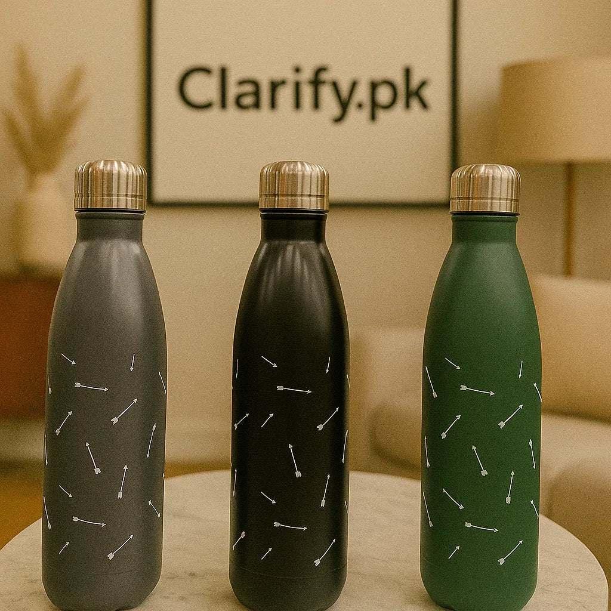
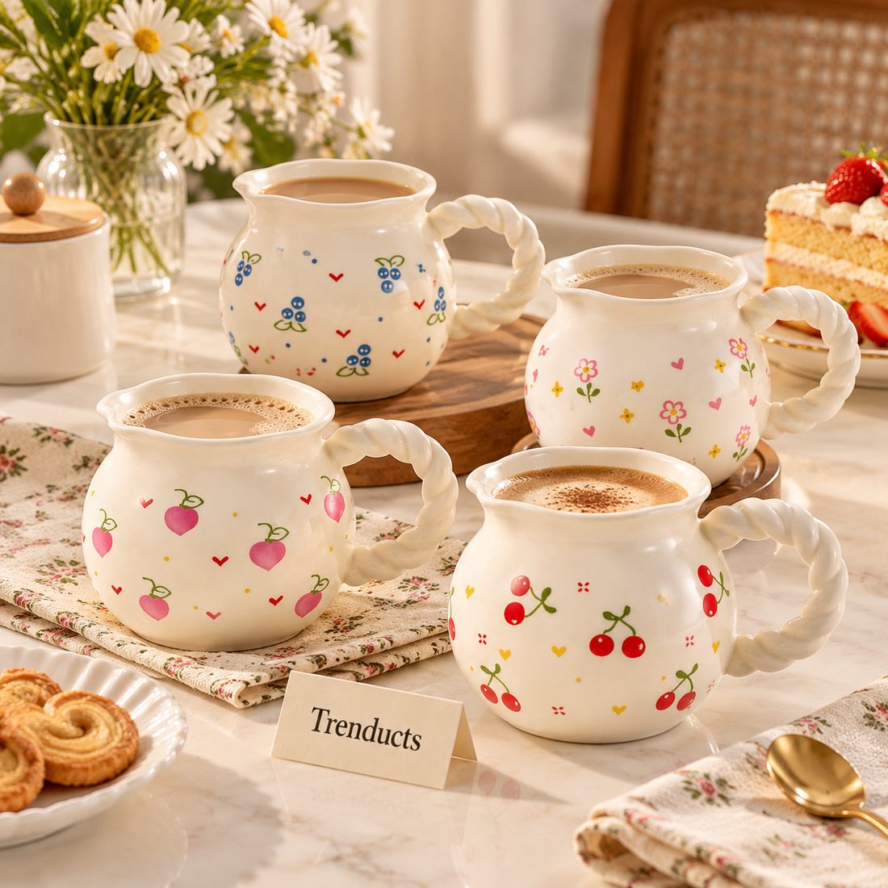

Walk into most Pakistani kitchens and you will find a mixed collection of drinking vessels: a few glasses from a long-gone water set, steel glasses that have lasted decades, a stack of mugs with logos from somewhere, and plastic bottles for the fridge. That is perfectly normal, but when it is time to replace or upgrade, it helps to understand what each material actually does well.
This guide compares glass, stainless steel and ceramic for the drinks we actually have at home.
Glass: for water, sherbet and serving guests
Glass is the traditional choice for drinking water and cold drinks. It does not hold flavours or smells, so water tastes clean, and you can see at a glance whether it is clean. Glass also shows off colourful drinks like rooh afza, lemonade and lassi beautifully, which is why it remains the first choice for serving guests.
The downsides are weight and breakage. Thicker or hammered glass is more forgiving than thin glass. For families with small children, keep the nicer glasses for adults and guests.
Stainless steel: for travel and durability
Steel glasses have been in Pakistani homes for generations because they are nearly indestructible. Modern insulated steel bottles take that durability further, with double walls that keep water cold for hours in summer or tea warm in winter. They are the sensible choice for school, office, travel and the gym.

Steel does not suit everyone for hot drinks at home, because single-wall steel cups get hot to hold. Insulated designs solve that. Look for food-grade stainless steel and leak-proof lids if the bottle will go into a bag.
Ceramic: for chai and coffee
Ceramic is the natural partner for hot drinks. It holds heat comfortably, the handle stays cool, and a good mug makes a morning cup of chai feel like a small treat. Ceramic also comes in endless designs, so mugs often become personal items, with each family member having a favourite.
Ceramic can chip, and some decorated mugs are not microwave safe, so check the label. Avoid storing cold water in ceramic for long periods, as it can pick up flavours from the glaze over time.
A quick comparison
- Water at home: glass, for clean taste.
- Water on the go: insulated stainless steel.
- Chai and coffee: ceramic mugs or cups with saucers.
- Guests and dawats: matching glass sets or a tea set.
- Children: steel or sturdy glass with care.
Building a balanced set
You do not need dozens of pieces. A practical household might have one good glass set for water and guests, a ceramic mug per person plus a few spares, and an insulated bottle for each person who leaves the house daily. That covers almost every situation without filling cupboards.

Care for each material
Glass is happiest washed by hand with a soft sponge; dry it upside down on a rack to avoid water marks. Steel bottles need a bottle brush, especially around the lid seal, and should be left open to air-dry so they do not develop smells. Ceramic mugs can stain from strong tea; a little baking soda paste gently removes rings. Avoid sudden temperature shocks with glass and ceramic.
A note on plastic
Plastic bottles and cups are cheap and light, but they scratch, hold smells and can warp with hot water. Many families keep them for picnics only and use glass or steel for daily drinking water at home. If you do use plastic, replace it once it looks cloudy or scratched, and avoid leaving bottles in a hot car.
Where to compare options
If you are replacing a mixed collection, it helps to see all three materials together. The drinkware range at https://www.trenducts.pk/collections/all-drinkware includes glasses, insulated steel bottles and ceramic mugs, delivered across Pakistan.
The right vessel for the moment
There is no single best material. Glass makes water and sherbet feel fresh, steel keeps drinks safe and cold on the move, and ceramic makes chai a comfort. Choosing each for the job it does best gives you a collection that is used every day rather than sitting in a cupboard.